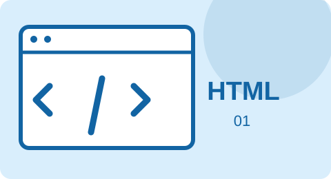
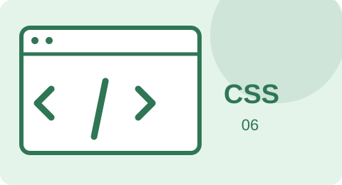
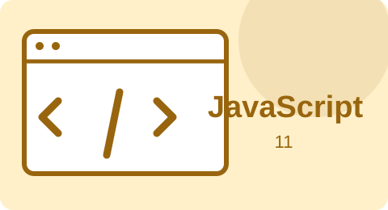

HTML
Estruture páginas com significado, links, imagens e formulários.
O WebAprender reúne 15 conteúdos introdutórios de HTML, CSS e JavaScript em um guia organizado para quem está começando.
Explorar os 15 conteúdos
Estruture páginas com significado, links, imagens e formulários.

Crie layouts legíveis e responsivos usando regras de estilo.

Adicione interatividade e manipule dados no navegador.
Leia os resumos na área de conteúdos, use filtros de categoria e nível, abra os detalhes e guarde seus favoritos. Depois, acesse a página Pratique e registre seu plano de estudos.
Montar meu plano